Inhalt Index DeskTop Bronstein

 Algebra und Diskrete Mathematik Elementare Zahlentheorie Codierungen Fehlerkorrigierende Codes
Algebra und Diskrete Mathematik Elementare Zahlentheorie Codierungen Fehlerkorrigierende Codes


Eine nichtleere Teilmene 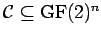 heißt (binärer) linearer Code, wenn  ein Untervektorraum von 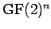 ist. Hat ein linearer Code die Dimension k, dann wird er ein (n,k)-Linearcode genannt.
ein Untervektorraum von 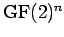 ist. Hat ein linearer Code die Dimension k, dann wird er ein (n,k)-Linearcode genannt.
| Beispiel Fortsetzung |
|
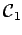 ist ein (4,1)-Linearcode, 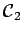 ist ein (3,2)-Linearcode, 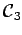 ist ein (5,2)-Linearcode. |
Für binäre Linearcodes sind die Minimalabstände (und daraus die Anzahlen der korrigierbaren Fehler) leicht erkennbar: Der Minimalstand eines solchen Codes ist der kleinste Abstand eines Codewortes, das nicht selbst der Nullvektor ist, zum Nullvektor des Vektorraums. Man findet also den Minimalabstand, indem man die Minimalzahl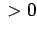 von Einsen in den Codewörtern ermittelt.
Für jeden (n,k)-Linearcode  gibt es eine Generatormatrix G mit 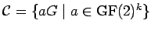:
gibt es eine Generatormatrix G mit 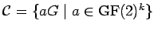:
| 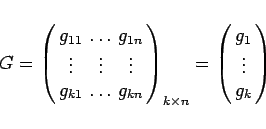 | (5.289) |
Der Code ist durch Angabe der Generatormatrix eindeutig beschrieben; das Codewort zum Nachrichtenwort 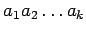 wird nach folgender Vorschrift bestimmt:
| 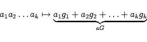 | (5.290) |
Zum Decodieren benötigt man bei (n,k)-Linearcodes  eine Kontrollmatrix H:
eine Kontrollmatrix H:
| 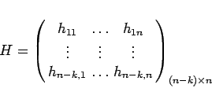 | (5.291) |
Der (binäre) Linearcode  ist (mindestens) 1-fehlerkorrigierend, wenn die Spalten von H paarweise verschieden und ungleich vom Nullvektor sind. Hat man in so einem Fall nach der Übertragung das Wort 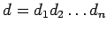 erhalten, dann berechnet man 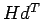. Ist das der Nullvektor, dann ist d selbst ein Codewort. Ansonsten stellt man fest, daß HdT die i-te Spalte hi der Kontrollmatrix H ist; das zugehörige Codewort ist dann 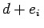, wobei 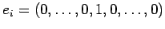 ist und die 1 an der i-ten Stelle steht.
ist (mindestens) 1-fehlerkorrigierend, wenn die Spalten von H paarweise verschieden und ungleich vom Nullvektor sind. Hat man in so einem Fall nach der Übertragung das Wort 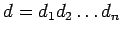 erhalten, dann berechnet man 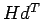. Ist das der Nullvektor, dann ist d selbst ein Codewort. Ansonsten stellt man fest, daß HdT die i-te Spalte hi der Kontrollmatrix H ist; das zugehörige Codewort ist dann 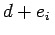, wobei 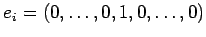 ist und die 1 an der i-ten Stelle steht.